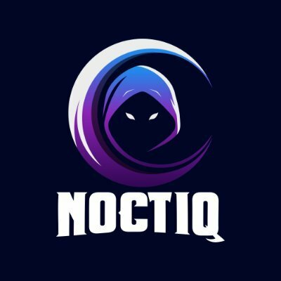

Ha ezt ZIP-bol duplakattal nyitottad meg, inditsd helyi szerverrol. Pelda: a mappaban futtasd a python -m http.server 8000 parancsot, majd nyisd meg: http://localhost:8000.
python -m http.server 8000
http://localhost:8000